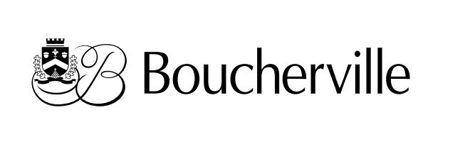

Maskipeche - Boucherville
Du 28 septembre au 30 octobre 2022
Galerie Vincent-D’Indy
Centre multifonctionnel Francine-Gadbois
Maskipêche est le nom de la pourvoirie que son père a jadis bâtie sur les berges du lac Saint-Pierre. Ce projet est né d’une courte nouvelle écrite par sa sœur qui raconte le récit de leur père qui décida le temps d’une saison de devenir pourvoyeur de pêche blanche. Son approche de la pêche hivernale, ou pêche blanche n’est pas seulement autobiographique, mais aussi collective. L’artiste met en jeu des éléments culturels québécois qui renvoient à notre territoire et ses traditions. Le thème de la nordicité est au cœur de ce projet artistique. Il contribue à enrichir une vision de notre patrimoine et sa représentation. Par diverses approches en art de l’impression, Myriam Tousignant partage une histoire empreinte de résilience et de beauté.
